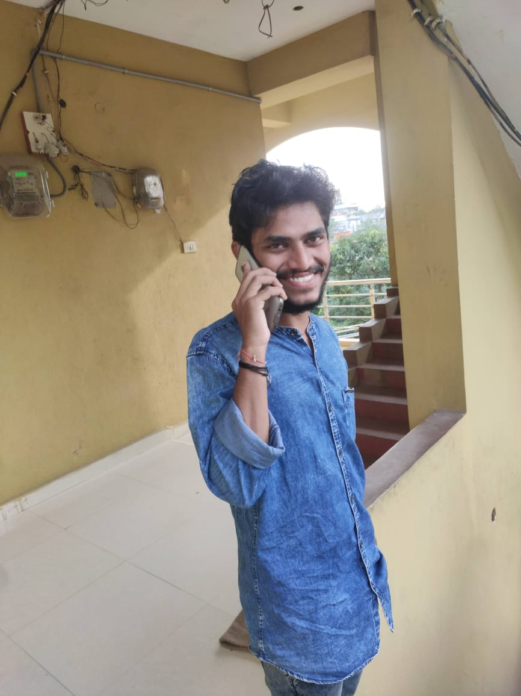

I don't know how we met and why we met you are truly the one for me. You are the reason behind my smile, you are my tears, my heart, you are my everything. I have realized that it was you who keep me alive and cheerful. You took care of me like a small kid. Every girl wants a boy who understands her a lot in any situation I am so lucky because you are the one who understood me and knows everything about me. But that understanding and caring I am unable to see nowadays. I don't know why... Okay cool.
But where ever you are... you should be happy and achieve all success in your life because you deserve it. And finally sorry if I hurt you anytime .. you are so so so sweet candidate to me ... I will miss u for sure.